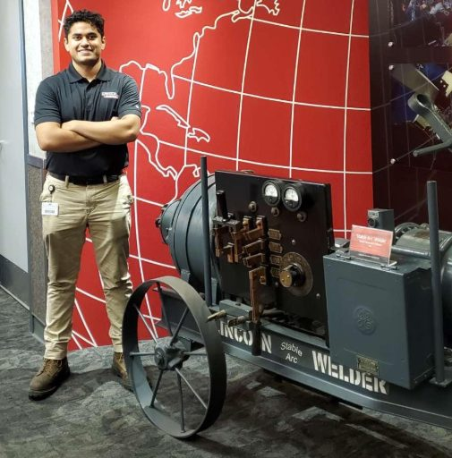

This tab may look a tad interesting in the sense that you may notice a lack of pictures and perhaps some cryptic wording. As part of the NDA, identifying details of the project had to be omitted. Nonetheless, I can share the engineering aspects involved with the project
This was the main project I was involved with this internship. The concept was to create a new welding machine from two of Lincoln's existing models. One of these models is a smaller, more barebones setup while the other is commercial sized and has extensive capabilities. My task was to start with the larger machine and convert it to a machine with the same power but simpler utility using electronics from the smaller machine.
- Motor swapped to a slightly smaller brushless one
- Cheaper and requires less maintenance compared to brush motor
- PCB Board swapped with one from smaller machine
- Needed to see how to integrate/adapt engine & motor wiring to work with new PCB board
- Created logic diagram to determine wiring for various engine components to run at appropriate times for a 5 position switch:
- Starter
- Low Idle
- High Idle
- Auto Idle
- Off
- Spliced wires, installed relays and tested machine
- Utilized toroid for auto idle capabilities and completed testing
- Designed and fabricated a portability kit prototype using already manufactured in house parts

This concept project was presented to upper management for review as well as during the Lincoln Electric Intern Showcase. Other small projects were also completed during this internship regarding the design of current products.